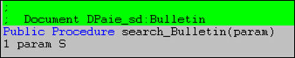

La section <Application> de la description d'un document définit le nom du module et le nom de la fonction à exécuter lors d'un double-clic sur le résultat de la recherche.
Attention :
A l’exécution de cette fonction, il faut sauvegarder le contexte, car cette fonction peut-être appelée depuis le menu Divalto par exemple.
Paramètre de la fonction associée à un document
La fonction comporte un paramètre de type S qui contient une chaîne <Hmp> avec le résultat de la recherche :
L’identifiant du document
<Search_Dico>,<Search_Ref>,<Search_Id>
Les fields communs « stored »
<Sujet>, <Domaine>, <Famille>, <Titre>,<Dossier>, <Etablissement>, <Auteur>,<DateCreation>, <DateModif>, <DateHS>
Les autres fields « stored » du document
